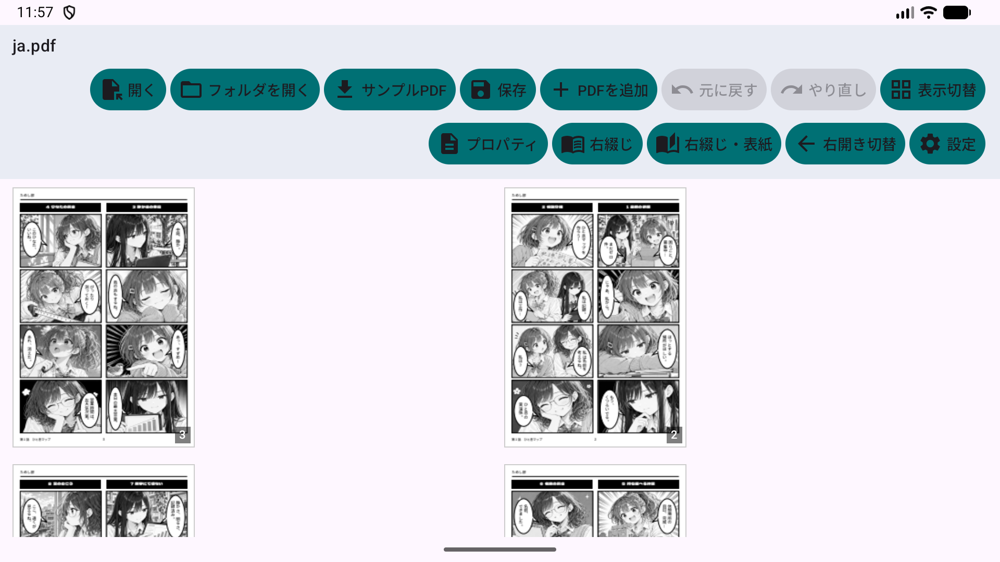
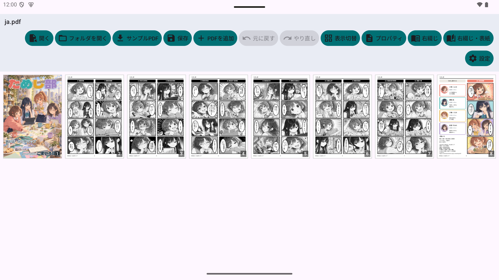
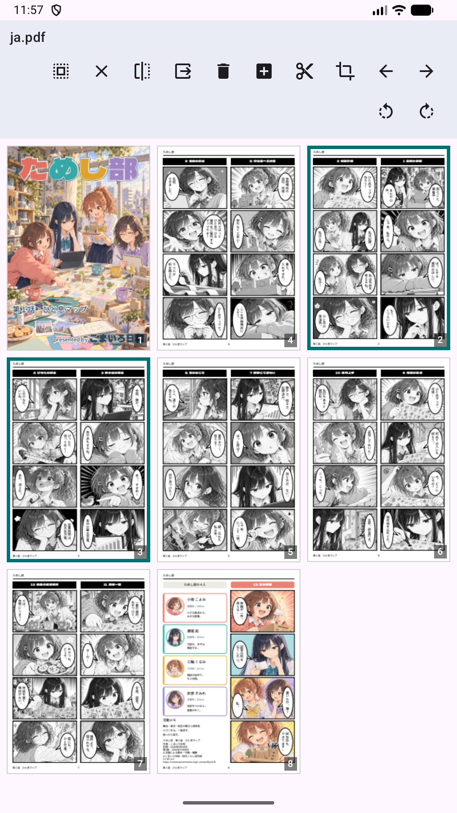
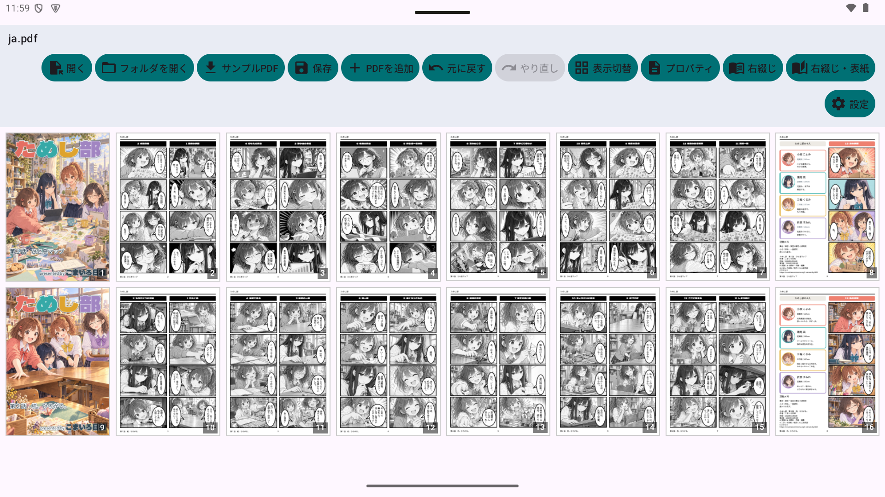
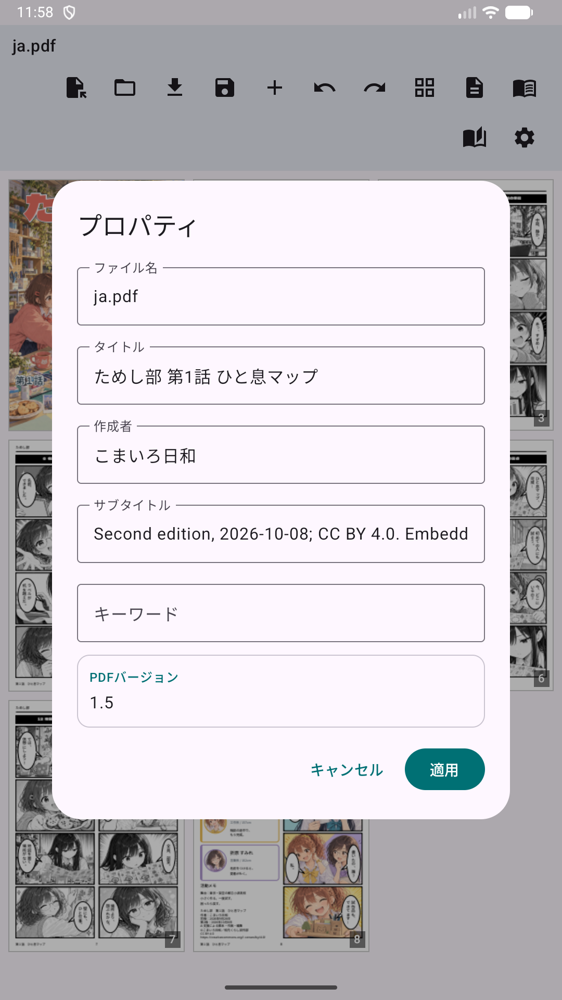
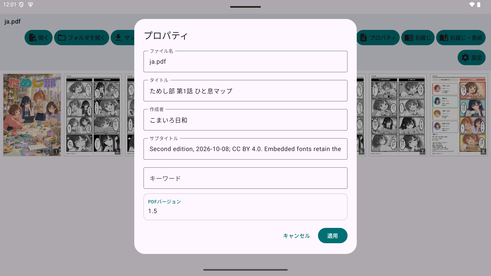
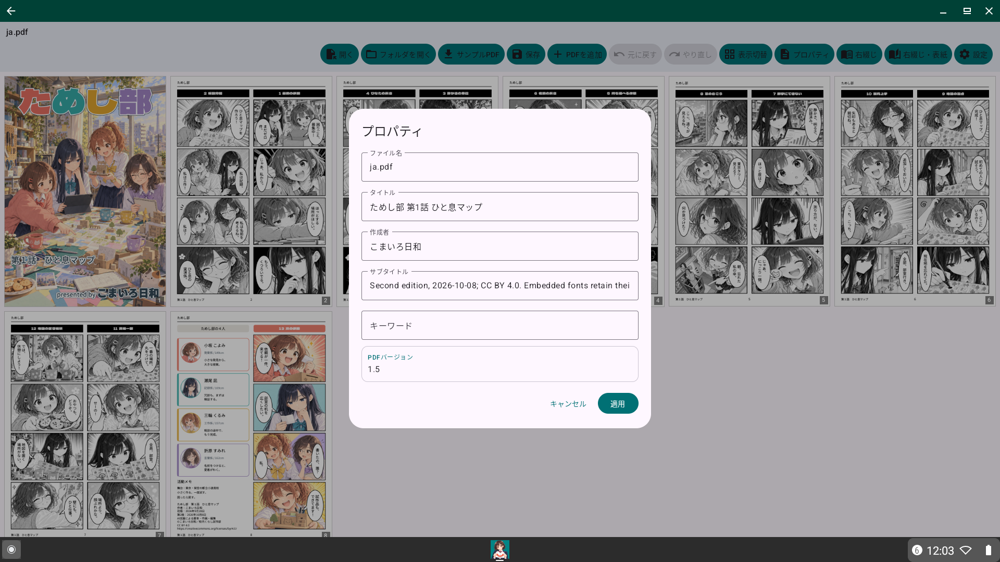

見開きPDFユーティリティ
仕事・学業・提出書類の整理から自炊本・漫画の見開き表示・分割・結合まで自在。
製品版は一般公開前です。公開準備・Xテスト案内の確認記録（2026-11-23）
仕事・学業・提出書類の整理から自炊本・漫画の見開き表示・分割・結合まで自在。
見開きPDFユーティリティは、PDFのページを整理して保存するための多機能ツールです。仕事や学業、提出書類のPDF整理はもちろん、自炊した書籍や漫画の編集・閲覧にも最適です。
2ページを横並びで表示。日本の書籍や漫画に合わせた「右開き（RTL）」にも完全対応しています。

見開き1ページを2つのページに分割。垂直（左右）と水平（上下）の両方の分割方向をサポートします。

サムネイルをドラッグするだけでページ順序を整理。直感的なインターフェースで編集が捗ります。

複数のPDFファイルを1つに結合したり、既存のPDFにページを追加したりできます。

アプリ内で動的生成するテストPDFを活用した総合診断・ベンチマークテスト（機能テスト、編集系機能テスト、1000ページ負荷テスト、検索パフォーマンス測定）の実行と、端末内ローカル監査ログ（24時間自動保持・外部送信なし・オフライン処理）の確認が可能です。
画面幅840dp以上の水平メニューバーと、小さい画面向けのカテゴリ別スクロール可能なボトムシートメニューの自動切り替え、およびオプションからのツールバーボタンカスタマイズ。
初回起動時の分かりやすいガイド画面。「次回から表示しない」オプション、サンプルPDFの即時試用、およびヘルプからのいつでも再確認に対応。
本アプリはスマートフォン、タブレット、ChromeOSなど、様々な環境で快適に動作するように設計されています。



アプリでお試しいただけるサンプルPDF（マンガ）をダウンロードできます：
14言語・17言語地域区分×3話の全51冊です。スペイン／中南米、ブラジル／ポルトガル、台湾／香港を区別して選べます。香港版は標準書面語で、口語の広東語版ではありません。取得時にサイズとSHA-256を検証し、旧PDFは保持します。
『ためし部』第1〜3話
© 2026 こまいろ日和
本作品のうち、公開者が著作権その他の許諾対象となる権利を有する部分を、Creative Commons 表示 4.0 国際（CC BY 4.0）で提供します。
再利用時は、作品名、作者名「こまいろ日和」、原作品の公開元、ライセンスへのリンクを表示し、変更した場合はその旨を明示してください。
本作品は、文章・画像の制作および翻訳に生成AIを使用しています。フォントなど第三者に権利がある素材には、それぞれのライセンスが適用されます。著作権等による保護を受けない部分の利用を、この表示によって制限するものではありません。
14言語・17地域区分×3話（全51冊）のサンプル漫画をダウンロードできます。旧バージョンのアプリ向けのダウンロード先も引き続き利用できます。
日本語と英語の動画ガイドです。YouTubeで開きます。